Исследовательское агентство
TRENDscan
Более 15 лет создаем маркетинговые решения для бизнеса, стремясь стать надежным партнером для наших клиентов
- Наш опыт работы позволяет тонко чувствовать и понимать клиентов и их аудитории
- Мы используем комплексный подход к сбору, анализу и визуализации данных.
- Даем понятный и информативный результат
Что мы делаем?
Качественные исследования:
Исследования методами фокус-групп (оффлайн и онлайн), интервью с клиентами, экспертами. Организуем сопроводительные визиты и дневники.
1
Детские исследования:
Фокус-группы с детьми и подростками при участии профессиональных психологов, педагогов и ювенологов. Мы умеем выстраивать комфортный диалог с возрастными группами от 5 лет.
2
Количественные исследования:
Разрабатываем анкеты и проводим онлайн-опросы на различных аудиториях.
3
Какие задачи помогаем решить
Определение характеристик и предпочтений целевой аудитории, выявление их потребностей и мотивов, а также факторов, влияющих на покупательские решения.
- Кто моя целевая аудитория?
- Какие проблемы и потребности у нее есть?
- Какие факторы побуждают их к покупке?
Примеры вопросов:
Понимание факторов, влияющих на решения потребителей при покупке, и выявление триггеров и барьеров, которые влияют на решение о покупке. Построение клиентского пути (CJM, JTBD).
- Как потребители принимают решение о покупке?
- Какие этапы пути клиента наиболее важны?
- Что удерживает потребителей от покупки?
- Какие тренды оказывают влияние на покупательское поведение?
- Какие основные миссии покупки и «найма» продукта/услуги?
Примеры вопросов:
Изучение конкурентов, их стратегий, сильных и слабых сторон, а также их рыночного позиционирования. Позволяет выработать конкурентные преимущества, подготовить SWOT-анализ.
- Какие сильные и слабые стороны у конкурентов?
- Чем я могу выделиться на их фоне?
- Какие действия предпринимают конкуренты для увеличения продаж?
Примеры вопросов:
Оценка узнаваемости бренда, уровня лояльности клиентов и восприятия бренда на рынке. Позволяет понять, с чем бренд ассоциируется у потребителей.
- Насколько узнаваем мой бренд среди целевой аудитории?
- Как мой бренд воспринимается на рынке?
- Насколько клиенты лояльны к бренду?
- О чем говорит бренд потребителям, какие ценности несет в себе?
Примеры вопросов:
Оценка реакции потребителей на новый продукт или услугу/сервис, выявление их предпочтений, а также оценка функциональности и конкурентоспособности продукта.
- Как потребители оценивают мой продукт?
- Какие функции или аспекты продукта следует доработать?
- Готовы ли потребители платить за этот продукт?
- Ценовая эластичность продукта?
Примеры вопросов:
Изучение восприятия рекламных кампаний, оценка их воздействия на целевую аудиторию и анализ их результативности.
- Насколько эффективна моя реклама в привлечении клиентов?
- Какие элементы рекламы наиболее заметны?
- Нужно ли вносить изменения в текущие рекламные кампании?
Примеры вопросов:
Почему мы
Нам доверяют:
 

TRENDscan
ООО "Порождение Диснея"
ИНН 777777000
КПП 777777000
ОГРН 111111111111
БИК МАК
Юр.адрес: ООО "Порождение Диснея"
Фактический адрес: ООО "Порождение Диснея"